|
RKC - Roda JC (1-1) 17 april 2004 |
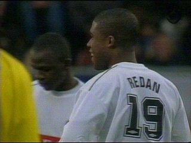
Iwan Redan staat als RKC-huurling vanavond
extra in de belangstelling.
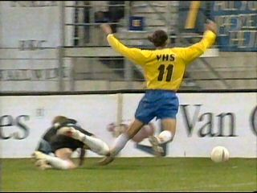
RKC-speler Oost laat zien waarom er VHS op
zijn shirtje staat: Verdomd Hufterige Schwalbe!
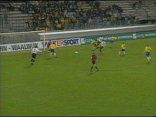
Kone legt de bal op Redan die naastschiet terwijl
de vrijstaande Vicelich die zich bij de tweede paal
aanbiedt een betere optie lijkt.
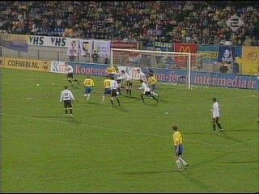
Na een vrijetrap van Hoogendorp ontstaat er een
rommelige situatie voor het doel van Kujovic.
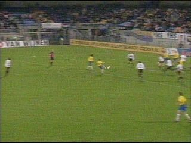
De bal wordt weliswaar weggewerkt maar komt
precies voor de voeten van Boutahar die met een
volley 1-0 scoort (40').
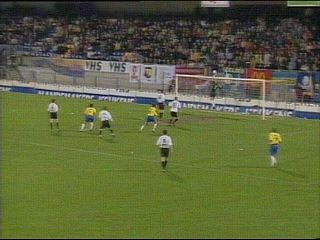
Een van de paal terugstuiterende bal wordt door
Vicelich keihard tegen het lichaam van een
RKC'er geschoten waarop de bal als een
onbedoelde lob in het doel dreigt te geraken.
Maar Kujovic redt Roda andermaal.
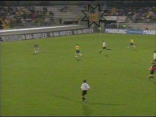
Hoogendorp gaat voor de tweede keer buitenspel
op Kujovic af. In de hoek een mooie KVM-vlag!
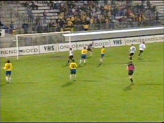
Ongeveer 200 Roda-supporters.
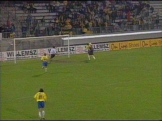
Na een afgeslagen lob van Hoogendorp weet
Kujovic ook in tweede instantie een doelpoging
van de falende RKC-spits te verijdelen.
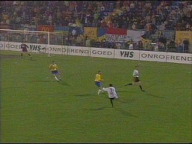
In de extra tijd verzendt Sonko een op maat
gesneden voorzet naar Redan.
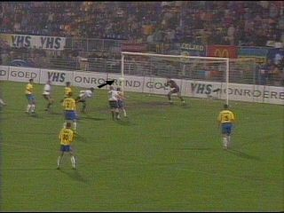
Redan kopt goed in maar doelman Sinouh stompt
de bal weg.
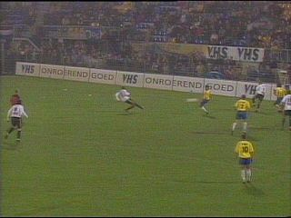
Die bal komt voor de voeten van Kone die meteen
op doel schiet. Sinouh stompt de bal wederom weg.
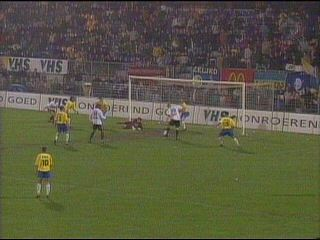
Hierop krijgt Luijpers de bal mooi voor de voeten
en hij scoort de onverwachte gelijkmaker (91').
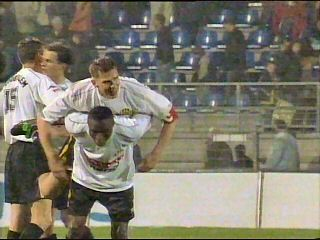
De vreugde om de late treffer! De beregrote
Mark Luijpers bespringt de fragiele Edrissa....
© Koempels
Pleasure Dome